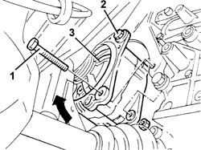
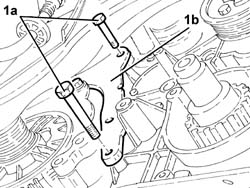
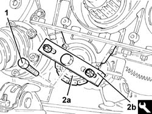
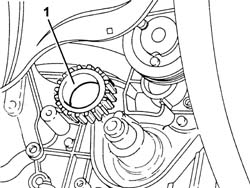
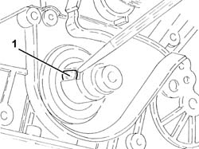
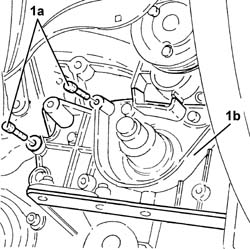
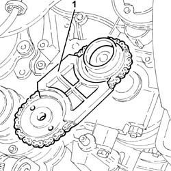
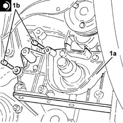
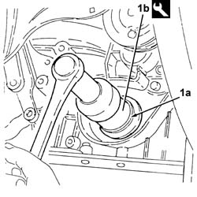
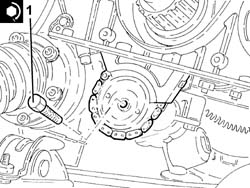

1084B23 oil pump control return - r r
- Path
- Procedures > 10 ENGINE > 1084 ENGINE LUBRICATION SYSTEM > 1084B engine oil lubrication circuit > 1084B23 oil pump control return - r r
- Kind
- repair procedure (removal / refitting; the operation number is the code)
- Applies to
- engines: 2.5 V6, 3.2 V6; all production periods
- Interactive page
- https://sloeber94.github.io/elrnDB-a156/en/#/3237614
Applies to: engines: 2.5 V6, 3.2 V6; all production periods
 Removing
Removing
 Refitting
RefittingPosition the vehicle on the ramp.
Proceed with the removal 4450B10 Front WHEEL (one) - R.R. .
Proceed with the removal 7055B64 Engine compartment DUST shield in front wheel arch (one), left or right - R.R. .
Proceed with the removal 7055B54 under-engine guard - r r .
Proceed with the removal 1092G10 single engine belt r r .
Proceed with the removal 1076B52 exhaust pipe (one) leaving l/h or r/h exhaust manifold - r + r .
Proceed with the removal 5510C34 rpm and timing sensor (single) - r+r .
Proceed with the removal 1020A20 crank case oil sump - r + r clean seals for sealant application .
Proceed with the removal 1092A12 crankshaft pulley - r+r for versions with air conditioner .
Proceed with the removal 1032D12 timing system protective cover(s) - r + r .
Proceed with the removal 1032B14 toothed timing belt - r + r for timing adjustment or replacement versions with air conditioner .
1. Undo the lower bolt fixing the alternator to the mounting bracket.
2. Loosen the upper alternator fixing bolt.
3. Turn the alternator upwards using the upper bolt as a fulcrum.

Applies to: engines: 2.5 V6, 3.2 V6; all production periods
Undo the bolt fixing the alternator spacer to the right cylinder head timing belt rear cover.
1. Undo the bolts (1a) fixing the alternator spacer (1b).
Move the alternator spacer, complete with alternator, sideways.

Applies to: engines: 2.5 V6, 3.2 V6; all production periods
1. Undo the chain and oil pump idler gears fixing bolt.
2. Move the drive chain (2a) away from the oil pump using the tool (2b).
 | Name | Country |
|---|---|---|
2b | Extractor | 1.860.954.001 |

Applies to: engines: 2.5 V6, 3.2 V6; all production periods
1. Remove the toothed drive pulley.

Applies to: engines: 2.5 V6, 3.2 V6; all production periods
1. Remove the key for the drive pulley from the crankshaft using a suitable drift.

Applies to: engines: 2.5 V6, 3.2 V6; all production periods
1. Undo the bolts (1a) and remove the crankshaft front cover (1b).
Remove the gasket.

Applies to: engines: 2.5 V6, 3.2 V6; all production periods
1. Remove the oil pump idler gears and chain.

Applies to: engines: 2.5 V6, 3.2 V6; all production periods
Refitting
RemovingPlace the oil pump drive chain and sprockets back in their housing.
Remove the crankshaft front oil seal from the crankshaft front cover.
1. Fit the crankshaft front cover (1a), complete with gasket, and fix it tightening the bolts (1b) to the recommended torque.
 | Fastening | Component | Ø | Value (daNm) |
|---|---|---|---|---|
1b | Bolt | CRANKSHAFT FRONT COVER | M6 | (Crankase side) 0.9 |

Applies to: engines: 2.5 V6, 3.2 V6; all production periods
1. Refit a new front crankshaft front cover oil seal (1a) using the tool (1b).
| Name | Country |
|---|---|---|
1b | Fitting tool | 1.860.949.000 |

Applies to: engines: 2.5 V6, 3.2 V6; all production periods
Place the drive pulley ket back in its housing in the crankshaft.
Place the drive pulley back in its housing.
1. Place the oil pump idler gears and chain on the oil pump control shaft and secure it by tightening the bolt to the recommended torque.
| Fastening | Component | Ø | Value (daNm) |
|---|---|---|---|---|
1 | Bolt | ENGINE OIL PUMP DRIVE CHAIN | M10 | 4.3 ÷ 5.3 |

Applies to: engines: 2.5 V6, 3.2 V6; all production periods
Place the alternator spacer, complete with alternator, back in its housing.
Tighten the bolts fixing the alternator spacer.
Tighten the bolts fixing the alternator spacer to the right cylinder head rear timing cover.
Place the alternator back in its housing and secure it using the bolts.
Proceed with the refitting 1032B14 toothed timing belt - r + r for timing adjustment or replacement versions with air conditioner .
Proceed with the removal 1016A42 left hand cylinder head ignition coil cover - r+r .
Proceed with the removal 1072B50 sleeves connecting air capacity box to inlet manifold is - r+r .
Proceed with the removal 5510C14 ignition coil/s - r+r .
Proceed with the removal 1016A36 left hand and right hand cam cover - r+r .
Proceed with the refitting 1016A36 left hand and right hand cam cover - r+r .
Proceed with the refitting 5510C14 ignition coil/s - r+r .
Proceed with the refitting 1072B50 sleeves connecting air capacity box to inlet manifold is - r+r .
Proceed with the refitting 1016A42 left hand cylinder head ignition coil cover - r+r .
Proceed with the refitting 1032D12 timing system protective cover(s) - r + r .
Proceed with the refitting 1092A12 crankshaft pulley - r+r for versions with air conditioner .
Proceed with the refitting 1020A20 crank case oil sump - r + r clean seals for sealant application .
Proceed with the refitting 5510C34 rpm and timing sensor (single) - r+r .
Proceed with the refitting 1076B52 exhaust pipe (one) leaving l/h or r/h exhaust manifold - r + r .
Proceed with the refitting 1092G10 single engine belt r r .
Proceed with the refitting 7055B54 under-engine guard - r r .
Proceed with the refitting 7055B64 Engine compartment DUST shield in front wheel arch (one), left or right - R.R. .
Proceed with the refitting 4450B10 Front WHEEL (one) - R.R. .
Refill the engine oil lubrication system 1084A10 ENGINE OIL - Check level and top up, if necessary .
Remove the car from the ramp.
Topics linked from this page (15)
- 1016A36 left hand and right hand cam cover - r+r
- 1016A42 left hand cylinder head ignition coil cover - r+r
- 1020A20 crank case oil sump - r + r clean seals for sealant application
- 1032B14 toothed timing belt - r + r for timing adjustment or replacement versions with air conditioner
- 1032D12 timing system protective cover(s) - r + r
- 1072B50 sleeves connecting air capacity box to inlet manifold is - r+r
- 1076B52 exhaust pipe (one) leaving l/h or r/h exhaust manifold - r + r
- 1084A10 ENGINE OIL - Check level and top up, if necessary
- 1092A12 crankshaft pulley - r+r for versions with air conditioner
- 1092G10 single engine belt r r
- 4450B10 Front WHEEL (one) - R.R.
- 5510C14 ignition coil/s - r+r
- 5510C34 rpm and timing sensor (single) - r+r
- 7055B54 under-engine guard - r r
- 7055B64 Engine compartment DUST shield in front wheel arch (one), left or right - R.R.